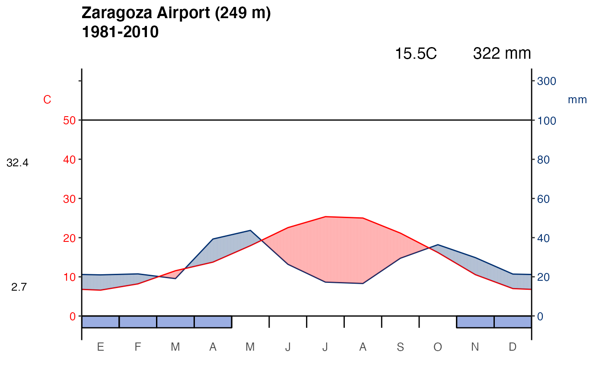
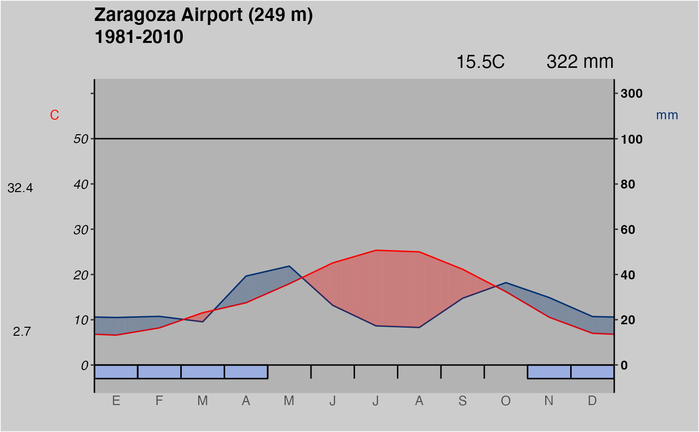

Plot of a Walter and Lieth climatic diagram of a station. This function is
an updated version of climatol::diagwl(), by Jose A. Guijarro.
ggclimat_walter_lieth( dat, est = "", alt = NA, per = NA, mlab = "es", pcol = "#002F70", tcol = "#ff0000", pfcol = "#9BAEE2", sfcol = "#3C6FC4", shem = FALSE, p3line = FALSE, ... )
Arguments
| dat | Monthly climatic data for which the diagram will be plotted. |
|---|---|
| est | Name of the climatological station |
| alt | Altitude of the climatological station |
| per | Period on which the averages have been computed |
| mlab | Month labels for the X axis. Use 2-digit language code ("en",
"es", etc.). See |
| pcol | Color pen for precipitation. |
| tcol | Color pen for temperature. |
| pfcol | Fill color for probable frosts. |
| sfcol | Fill color for sure frosts. |
| shem | Set to TRUE for southern hemisphere stations. |
| p3line | Set to TRUE to draw a supplementary precipitation line referenced to three times the temperature (as suggested by Bogdan Rosca). |
| ... | Other graphic parameters |
Value
A ggplot2 object.
Details
See Details on climatol::diagwl().
Climatic data must be passed as a 4x12 matrix of monthly (January to December) data, in the following order:
Row 1: Mean precipitation.
Row 2: Mean maximum daily temperature.
Row 3: Mean minimum daily temperature.
Row 4: Absolute monthly minimum temperature.
See climaemet_9434_climatogram for a sample dataset.
References
Walter, H., and Lieth, H. 1960. Klimadiagramm-Weltatlas. G. Fischer.
See also
Examples
library(ggplot2) wl <- ggclimat_walter_lieth( climaemet_9434_climatogram, alt = "249", per = "1981-2010", est = "Zaragoza Airport" ) wl# As it is a ggplot object we can modify it wl + theme( plot.background = element_rect(fill = "grey80"), panel.background = element_rect(fill = "grey70"), axis.text.y.left = element_text(colour = "black", face = "italic"), axis.text.y.right = element_text(colour = "black", face = "bold") )
Site built with pkgdown 1.6.1.
Template by Bootstrapious . Ported to pkgdown by dieghernan.